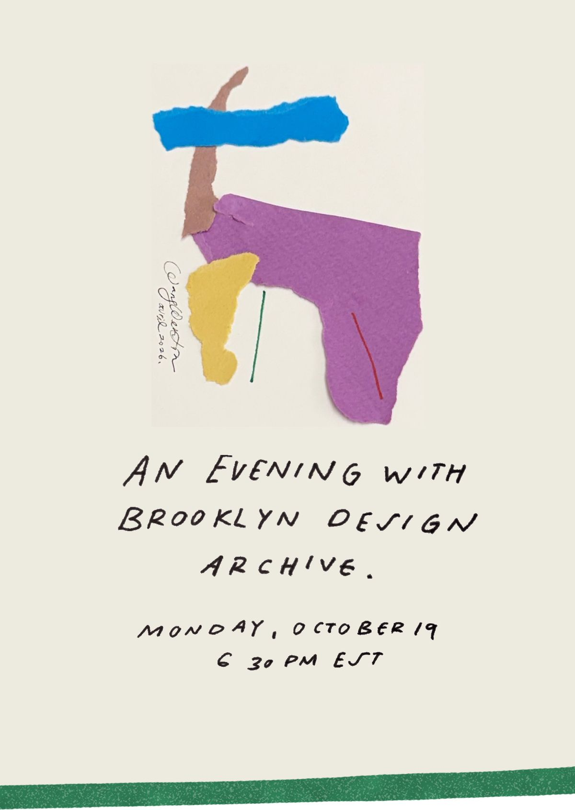

An Evening with Brooklyn Design Archive. Monday, October 19, 6:30 pm EST

Please join us this upcoming Monday, October 19, at 6:30 pm, to commemorate Materials that Matter, our exhibition presented in partnership with Pratt Institute’s Material Lab.
Monday, October 19
6:30 pm
Materials that Matter
- Michael Thonet, No. 14 Chair, 1859Bent beech wood
- Charlotte Perriand, Perriand LC7, 1927Chrome-plated tubular steel and leather
- Verner Panton, Panton Chair, 1967Polypropylene
Brooklyn Design Archive is a cultural project advancing the understanding of significant artifacts from the fields of furniture, industrial design and architecture.
Brooklyn Design Archive